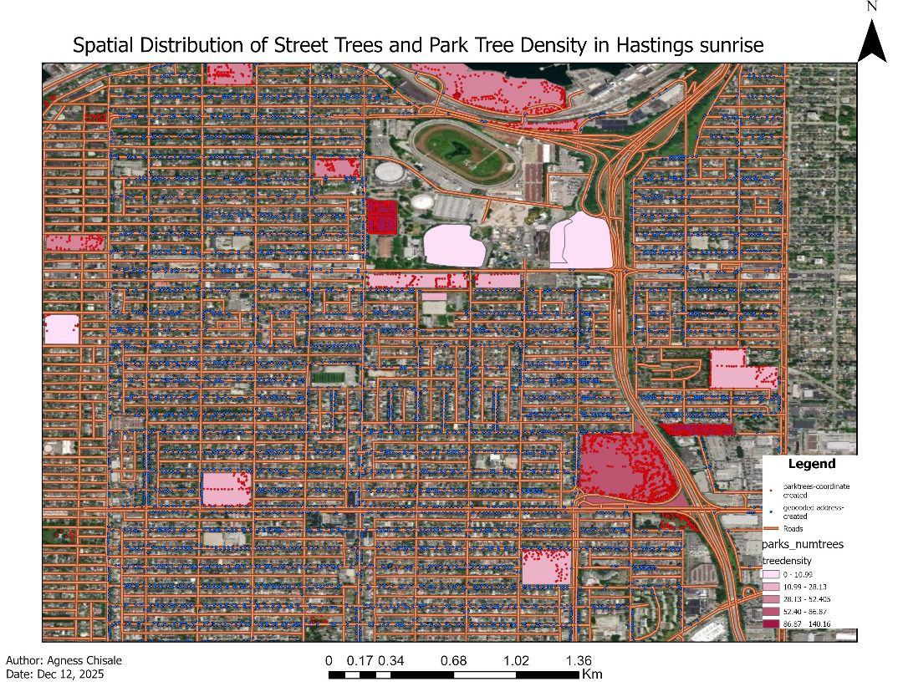

This project focuses on converting non-spatial data into geospatial datasets using ArcGIS Pro. Street tree addresses from a Vancouver neighbourhood were geocoded using a custom address locator built from a regional road network. Park tree coordinates were converted from tabular data into a spatial layer, and tree density was calculated per park across the City of Vancouver. Results were visualized on a final map showing geocoded trees, park tree density, and road infrastructure.
| Layer | Description | Source |
|---|---|---|
neighborhood_trees | Street trees for a single Vancouver neighbourhood | City of Vancouver Open Data Portal |
parks_polygon_representation | Park boundaries in Vancouver (polygon) | City of Vancouver Open Data Portal |
gvrd_roads | Road network for the Greater Vancouver Regional District | UBC PostgreSQL Server |
parktrees | Tabular dataset of trees in Vancouver parks with coordinates | UBC PostgreSQL Server |
| Tool | Purpose |
|---|---|
| ArcGIS Pro | Geocoding, spatial joins, field calculations, mapping |
| City of Vancouver Open Data Portal | Downloading street tree and parks data |
| UBC PostgreSQL Server | Accessing road network and park tree data |
Street tree data was downloaded for the neighbourhood with the highest tree count and an Address field was created by concatenating civic number and street name. A custom address locator was built from the GVRD road network and used to geocode the neighbourhood tree addresses. Match scores were reviewed to assess geocoding quality. Park tree data was loaded from the PostgreSQL server as a table with UTM coordinates and converted to a spatial point layer. A spatial join linked park trees to park polygons, and tree density (trees per hectare) was calculated for all parks over 1 ha in size.

Map showing the neighbourhood, parks symbolized by tree density, geocoded and coordinate-created points, roads, and a satellite basemap